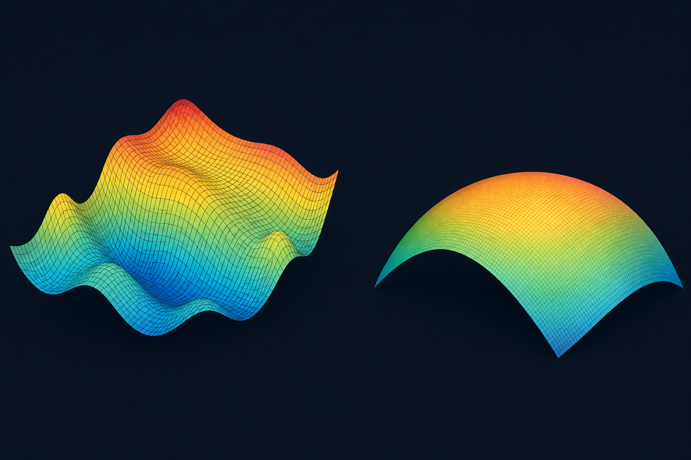

Geodesic Modeling of Low-Dimensional Learning Dynamics in Deep Neural Networks
Optimization
-
Tutorial Article
A technical article on when low-dimensional structures in deep neural networks form identifiable, geometrically simple trajectories.
-
Grassmuon
